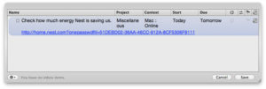

1Password 1Click Bookmarks and OmniFocus

(By default it will create a link with the title of the 1Password login, but I’ve pasted in the raw URL for illustration purposes.) Now, when you’re ready to complete the task, the URL is there ready to automatically log you in, leaving you an extra 1.5s to savor another sip of that beverage you’re quaffing.